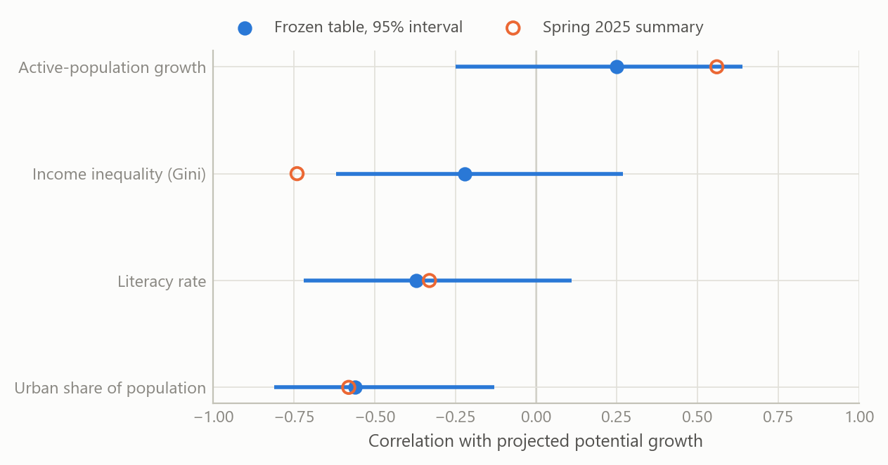
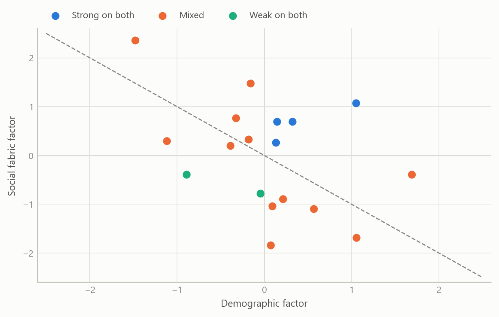
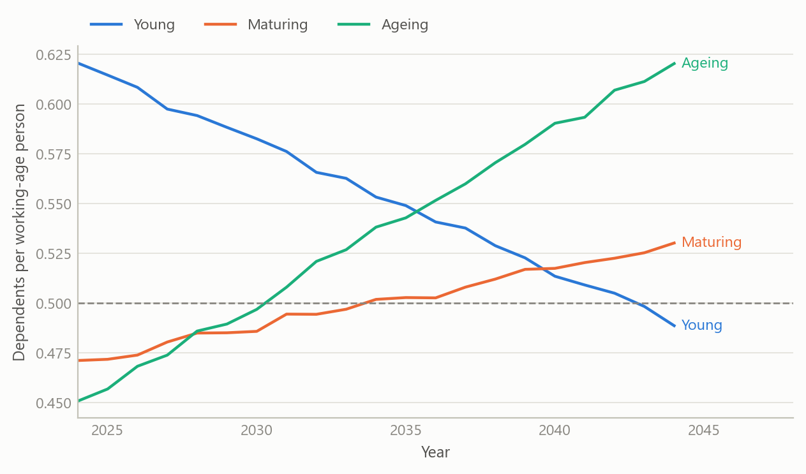

Demographics and growth in emerging markets
What eighteen economies’ long-run projections do, and do not, say about the demographic dividend
Global macro and emerging markets
A one-week research note and presentation on how demographic dynamics and social conditions line up with projected growth across 18 emerging economies.
The question
Demographics is the slow variable in macroeconomics. Births, deaths and migration set the size of the workforce a generation ahead, and they are known with far more confidence than almost anything else in a long-run forecast. The popular story is that a young, growing population is a growth engine and an ageing one is a drag.
That story is incomplete in a way that matters to anyone allocating attention or capital across emerging markets. A large cohort of working-age people is a potential, not an outcome. It becomes growth only when those people are educated, healthy, employed and able to move up, and when savings and investment follow. This project asked a simple question of that framework: across a broad group of emerging economies, how much of projected growth lines up with demography, and how much with the social conditions that decide whether demography pays?
The work was a research note and a presentation, written and delivered in under a week in spring 2025. It was built to be read by decision-makers, so it favours a clear structure and a short list of takeaways over econometric detail.
Approach
Coverage. The sample covers 18 emerging economies across Latin America, emerging Asia, Central and Eastern Europe, the Middle East and Africa. For each one the project assembled projected annual growth of total and economically active population over 2024–2044, the year in which the working-age population peaks, the year in which the dependency ratio crosses one half, and projected potential output growth over the same horizon taken from published external work. A second block of public indicators described social conditions: literacy, urbanisation, income inequality, life expectancy, connectivity, access to electricity, and spending on education and health.
Framework. The note starts from the demographic dividend: a falling dependency ratio opens a window in which savings, investment and productivity can rise, provided human capital and social mobility keep up. It also treats the mirror image, demographic drag, when the workforce shrinks and the dependency burden climbs.
Factors. To avoid choosing among dozens of overlapping indicators, each block was standardised and reduced to its first principal component. The demographic factor was built from six population variables and the social fabric factor from twelve variables on education, infrastructure and well-being. A composite score averaged the two with equal weights. Each country’s score can be decomposed into the contribution of every underlying variable, which makes the ranking explainable in a meeting rather than a black box.
Reading the relationships. Factors and individual indicators were set against projected potential growth with correlations, simple regressions and a quadrant map that sorts countries by strength of demography and strength of social fabric. A cluster analysis grouped economies with similar profiles. A comparison across several published long-run growth scenarios gave a sense of how wide the disagreement over each country’s trajectory is.
What the work shows
Demography lines up with growth, weakly. On the frozen table of 18 economies, growth of the economically active population and projected potential growth have a correlation of +0.25, with a 95% interval from −0.25 to +0.64. The sign is the one the dividend story predicts, but 18 observations cannot separate it from zero. A spring 2025 summary reported 0.56 for the same pair. It also reported that total and active population growth correlate at 0.90. In the final table the two series differ by exactly 0.2 percentage points in every economy, so one was built from the other and the correlation carries no information.
Inequality: the sign survives, the strength does not. The spring summary put the inequality-growth correlation at about −0.74, the strongest of the social links. The frozen table gives −0.22, with an interval from −0.62 to +0.27, and the rank correlation is only −0.08. The earlier figure most likely came from a wider early sample that included several Gulf economies and Egypt, which the final table does not contain. The one link whose interval excludes zero is urbanisation, at −0.56 (−0.81 to −0.13), with literacy at −0.37 close behind. These negative signs look perverse until one notices who is in the sample: economies that are already highly urbanised and literate are the mature ones, with lower growth ceilings. These are level effects, not evidence that schooling or cities hurt growth. The note says so plainly, because a naive reading would recommend the opposite of what the development literature shows. Adding the United States to the sample moves none of the four correlations by more than 0.03.
The standout cases are the instructive ones.
- India combines a growing workforce, with its working-age population peaking around 2032, with the highest projected potential growth of the group, despite the weakest social scorecard on literacy and urbanisation. Its case rests on scale and on the scope for upward mobility if policy delivers.
- South Africa has a similarly favourable demographic profile but the lowest projected potential growth of the group. Inequality and weak human capital are the standard explanation, and it is the clearest example of a dividend that goes uncollected.
- Korea and Taiwan show the opposite: shrinking workforces, high literacy and low inequality, and growth sustained by productivity.
Two factors, four quadrants. Plotting the demographic factor against the social fabric factor sorts the economies into four groups: strong on both, strong demography with weak social fabric, the reverse, and weak on both. The factors summarise their blocks unevenly: the first demographic component captures 0.63 of the variance of its six variables, the social component 0.44 of its twelve. On the frozen table the demographic factor correlates at +0.64 with projected growth (R-squared 0.40), but its loadings are dominated by population size, so it mostly says that India and China are both large and fast-growing. The social factor correlates at −0.52 (R-squared 0.27): the mature, well-served economies are projected to grow more slowly, which is convergence rather than a social drag. Because the two point in opposite directions, the equal-weight composite explains almost nothing (R-squared 0.001). An earlier run reported R-squared values of about 0.37 and 0.38, both positive, and a composite that did better than either; that run used projected growth per head, a measure the final table does not hold, so it cannot be reproduced.

The timing matters as much as the level. The most useful single variable for a decision-maker is not the growth rate of the population but when the dependency ratio crosses one half, and when the workforce peaks. Some economies are decades from that threshold, others have already passed it. The stylised paths below show three types of profile.

Insights
- Eighteen economies cannot confirm a dividend. Working-age growth and inequality carry the expected signs, but neither interval excludes zero. The same working-age growth appears alongside very different projected growth, and India and South Africa sit at opposite ends of the group with similar demographic profiles.
- A composite can hide two signals. The demographic and social factors each line up with projected growth, in opposite directions, and an equal-weight average cancels them. Look at the components before trusting an index.
- Productivity can offset shrinking numbers. The high-literacy, low-inequality economies with falling workforces still show respectable projected growth, which says that the weight falls on output per worker.
- Timing beats averages. The year a workforce peaks and the year the dependency ratio crosses one half say more about the investment horizon than a twenty-year average growth rate.
- Level effects mislead. Negative correlations for literacy and urbanisation reflect mature economies with lower growth ceilings, not a harm from education.
- Disagreement among scenarios is information. Long-run growth scenarios from different institutions can differ by several percentage points for the same country, so a single projection should not be treated as a fact.
Limits and next steps
The comparison is cross-sectional, with 18 observations, and the growth variable is itself a projection rather than an outcome. It therefore shows how forecasts line up with fundamentals, not what fundamentals cause. The projections already embed demographic assumptions, so some of the demography-growth link is built in.
The demographic factor, as constructed, was dominated by population size rather than by the speed or shape of change, which is not the dimension that the dividend argument cares about. A better version would build the factor from growth and timing variables only. Early summaries reported different correlations for the same relationships. Re-estimated on the frozen final table, two of the five headline values moved by more than 0.3 and one turned out to be built in by construction. That is why every value quoted here comes from that one table. Next steps are to add dependency-ratio timing as an explicit regressor, to include a measure of productivity growth, and to test whether the inequality effect survives once the sample is widened beyond 18 economies.
The investment-style tiering that accompanied the early drafts was a presentation device, not a result, and is not offered here as advice.
About the evidence
The note and presentation were produced in spring 2025, using published population projections, published long-run growth scenarios and public development indicators for 18 emerging economies. Correlations, intervals and explained variance in the text were re-estimated in October 2026 on the project’s frozen final table of 18 economies, with 95% intervals from the Fisher transformation. The spring 2025 values are quoted only where they differ. The correlation chart shows these derived statistics, not the underlying third-party projections. The quadrant chart and the dependency-ratio paths are simulated to share the structure of the analysis and are not the project’s results.
Figures and tables marked simulated are generated from simulated data built to share the structure of the analysis (its variables, horizons and frequencies). They show how the method works and what its output looks like; they are not the project’s results. Results stated in the text are the project’s own. Methods are described at the level of a methods section. Code and data pipelines are not reproduced here.